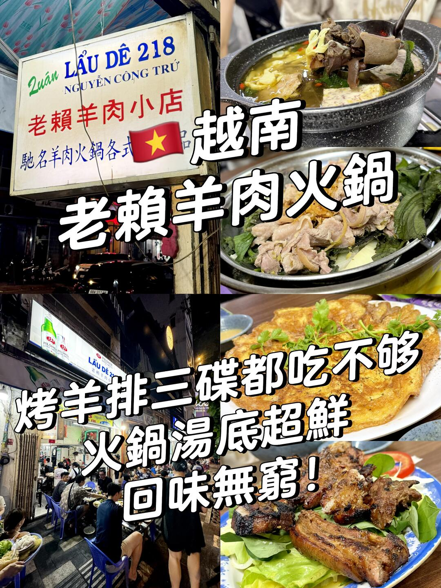
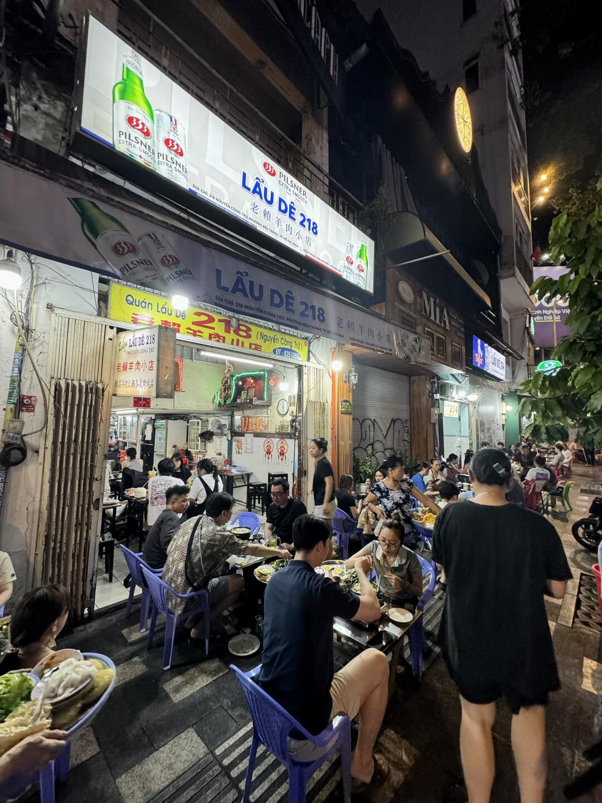
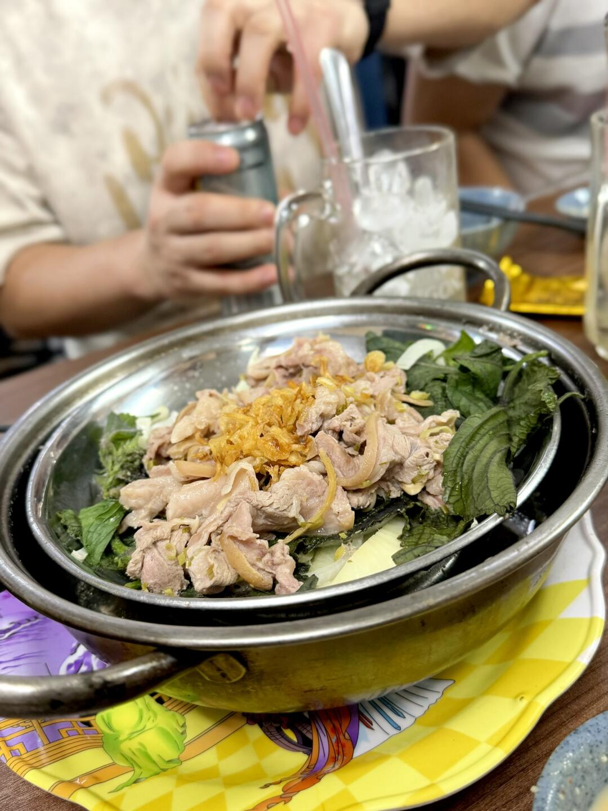
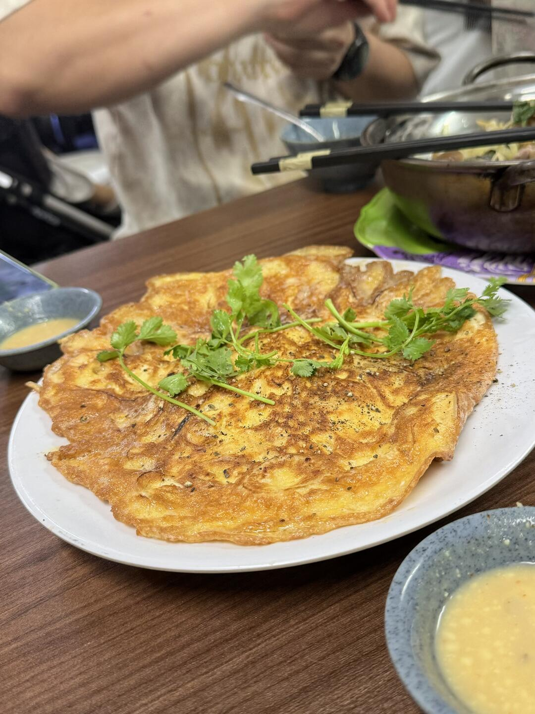
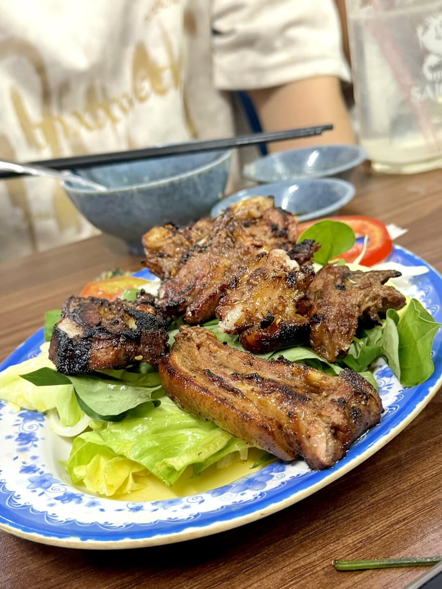
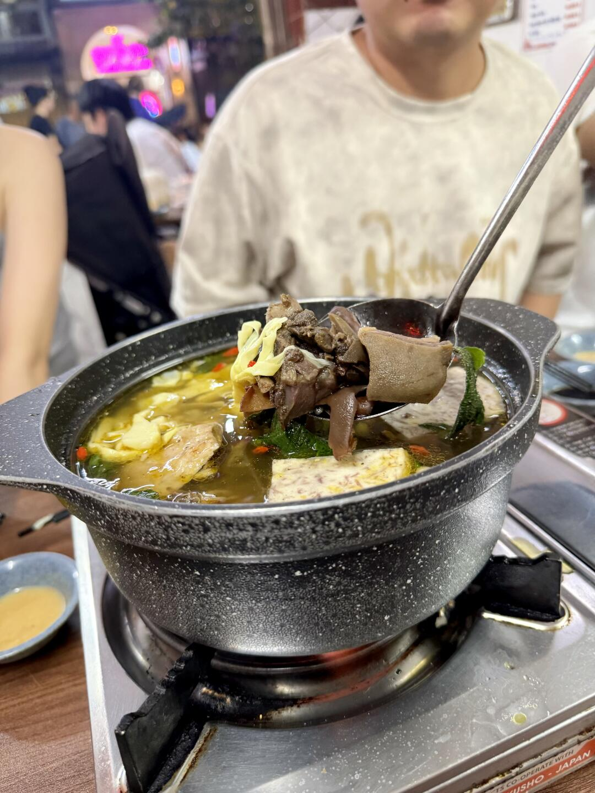
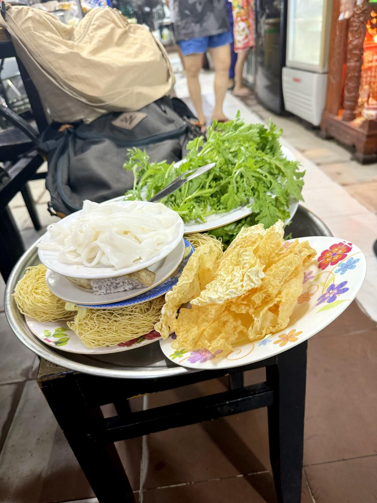
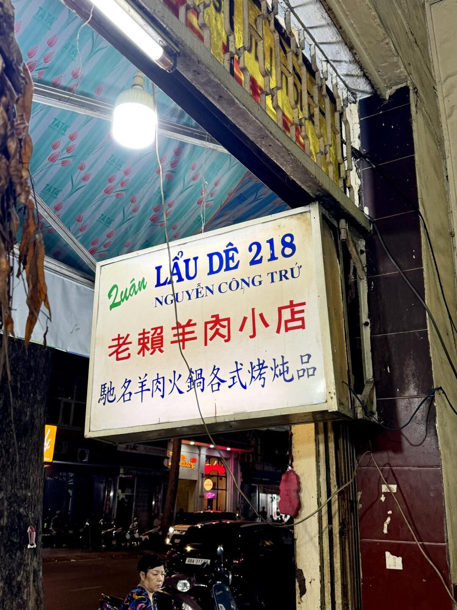

美食筆記 · 來自 Obsidian
老賴羊肉火鍋：廣東梅州第五代的胡志明老店

- 店名：Quán Lẩu Dê 218 - 老賴羊肉火锅（1980）
- 地址：218 Nguyễn Công Trứ, Bến Thành, Hồ Chí Minh
- 營業時間：週一-五 16:00 – 22:00、週六日 15:00 – 22:00
- 電話：+84 28 3825 1085
- 網站：laude218.com
這次在越南旅行挖到一間很有溫度的老店 老賴羊肉火鍋。老闆是第五代廣東梅州籍越南人，家族專注做羊肉料理已經傳承兩代，純家庭式經營，沒有華麗包裝，靠的都是扎扎實實的味道與人氣。
店面是當地很有氛圍的大排檔格局，簡簡單單的小方桌小膠椅，不刻意講究排場。坐在室外邊吹著晚風邊吃羊肉，特別有接地氣的滋味。老闆本人超親切，廣東話、普通話、越南語都能流利溝通，待人熱情周到，一坐下就有回到熟人店裡的放鬆感。
🐑 蒸羊肉⭐️⭐️⭐️⭐️
羊肉搭配紫蘇葉與洋蔥一同蒸製，肉質軟嫩不柴，幾乎沒有騷味。紫蘇的香氣很解膩，配上香酥炸蒜提味，口感溫潤順口，是很適合先開胃的一道。
🥩 烤羊排⭐️⭐️⭐️⭐️⭐️
羊排烤至外皮焦香，內裡溫潤多汁，油脂分布均勻，香氣很足。咬下去羊香與油香緩緩散開，風味濃郁不膩，當天忍不住連續追加三碟，可見人氣與口感都很在線。
🍲 羊肉爐火鍋⭐️⭐️⭐️⭐️
湯底以羊骨與羊肉長時間熬煮，湯頭濃郁溫厚，喝起來順喉不燥。鍋內搭配豐富配菜，四人同行點小份份量就足夠。涮煮過後的羊肉吸滿湯汁，軟嫩入味，越煮越有風味。
🍳 羊骨髓煎蛋⭐️⭐️⭐️⭐️⭐️
做法十分新奇少見，蛋液中加入羊骨髓與洋蔥一同煎製。火候拿捏得剛好，蛋體軟嫩可口，羊骨髓的香氣柔和融入其中，口感綿潤有層次，風味協調突出。
🔚整體總結
老賴羊肉火鍋沒有精致環境，卻憑著扎實的味道、親切的服務與世代相傳的手藝，成為當地很有人情味的一餐。從蒸、烤、煮到創意煎蛋，每一款羊肉料理都有自己的風味特點，份量實在、價格親民，在越南想嘗試地道又有廣僑風味的羊肉料理，這間大排檔很值得一試，下次來胡志明市都會再探訪。
📸 實拍






